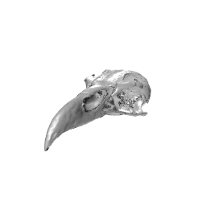

library(dplyr)
library(ggplot2) #3.5.1
library(plotly) #4.10.4
set.seed(1)
t <- 0:100 # generate time vector
dt <- NULL # generate object to compile time-series data
cols <- NULL # generate object to compile trendline coloursEvolutionary lottery of skull and beak morphology
gif provided by the awesome Jen Bright @MorphobeakGeek!

In this exercise we will use a github repo to collaboratively collate and simulate evolutionary trajectories for each participants’ species body size using a simple brownian motion evolutionary model. This assumes evolutionary steps to progress comletely at random. You could say:
it’s a bit of lottery!
Each participant has created and contributed a file specifying the parameters required to simulate and plot their species evolutionary trajectory. We’ve collect all participants’ files in the master repo. Next we need to simulate species trajectories plot them up.
Participants will then get to see the skull and beak shape corresponding to their species relative body size!
setup
First we load the required packages and create some objects to compile data on trait evolution for each species.
Simulate trait evolution, iterate over all species files in params/ folder
We’ll use the parameters supplied in your scripts to generate brownian trait evolution trendline for each species.
#getting the file names for everything except the template that has undefined values
spp.files <- dir("params/")[dir("params/") != "params_tmpl.R"]
for(spp in spp.files){
# source parameters for each species
source(file.path("params", spp))
# generate trait evolution time-series and compile plotting data
dt <- rbind(dt, data.frame(t,
trait = c(0, rnorm(n = length(t) - 1, sd = sqrt(sig2)) |> cumsum()),
species = species.name))
cols <- c(cols, color)
}Plot trait evolution timeseries
Use the data generated to plot all species.
# Specify the order of species based on the order of colors in cols to stop a mismatch in colours
dt$species <- factor(dt$species, levels = unique(dt$species))
# Create the ggplot object
p <- ggplot(data = dt, aes(x = t, y = trait, group = species, colour = species)) +
geom_line() +
scale_colour_manual(values = cols)
# Plot the results
ggplotly(p)Skulls! find the skull associated with your species:
Skulls are organised from largest to smallest. The largest skulls are vulture-like, (e.g. no. 50, the Andean condor Vultur gryphus) and the smallest are falconet-like, (e.g. no. 1 Collared falconet Microhierax caerulescens)
No: 43 yozw_fermonta

No: 33 anas_krystallinus

No: 31 jose_luxmont

No: 30 lux_fermonta

No: 27 lux_fermonta

No: 26 Junste

No: 26 malika_rocks
No: 24 lupus_castri

No: 21 Beckya curiosa

No: 20 jus_saurius

No: 20 narutosaurus_joshie
No: 7 utas_flowers

No: 3 lux_fermonta

Session Info
sessioninfo::session_info()─ Session info ───────────────────────────────────────────────────────────────
setting value
version R version 4.4.0 (2024-04-24)
os Ubuntu 24.04.2 LTS
system x86_64, linux-gnu
ui X11
language (EN)
collate C.UTF-8
ctype C.UTF-8
tz UTC
date 2025-06-17
pandoc 3.1.3 @ /usr/bin/ (via rmarkdown)
quarto 1.7.32 @ /usr/local/bin/quarto
─ Packages ───────────────────────────────────────────────────────────────────
package * version date (UTC) lib source
cli 3.6.5 2025-04-23 [1] CRAN (R 4.4.0)
crosstalk 1.2.1 2023-11-23 [1] CRAN (R 4.4.0)
data.table 1.17.6 2025-06-17 [1] CRAN (R 4.4.0)
digest 0.6.37 2024-08-19 [1] CRAN (R 4.4.0)
dplyr * 1.1.4 2023-11-17 [1] CRAN (R 4.4.0)
evaluate 1.0.3 2025-01-10 [1] CRAN (R 4.4.0)
farver 2.1.2 2024-05-13 [1] CRAN (R 4.4.0)
fastmap 1.2.0 2024-05-15 [1] CRAN (R 4.4.0)
generics 0.1.4 2025-05-09 [1] CRAN (R 4.4.0)
ggplot2 * 3.5.1 2024-04-23 [1] CRAN (R 4.4.0)
glue 1.8.0 2024-09-30 [1] CRAN (R 4.4.0)
gtable 0.3.6 2024-10-25 [1] CRAN (R 4.4.0)
htmltools 0.5.8.1 2024-04-04 [1] CRAN (R 4.4.0)
htmlwidgets 1.6.4 2023-12-06 [1] CRAN (R 4.4.0)
httr 1.4.7 2023-08-15 [1] CRAN (R 4.4.0)
jsonlite 2.0.0 2025-03-27 [1] CRAN (R 4.4.0)
knitr 1.50 2025-03-16 [1] CRAN (R 4.4.0)
labeling 0.4.3 2023-08-29 [1] CRAN (R 4.4.0)
lazyeval 0.2.2 2019-03-15 [1] CRAN (R 4.4.0)
lifecycle 1.0.4 2023-11-07 [1] CRAN (R 4.4.0)
magrittr 2.0.3 2022-03-30 [1] CRAN (R 4.4.0)
pillar 1.10.2 2025-04-05 [1] CRAN (R 4.4.0)
pkgconfig 2.0.3 2019-09-22 [1] CRAN (R 4.4.0)
plotly * 4.10.4 2024-01-13 [1] CRAN (R 4.4.0)
purrr 1.0.4 2025-02-05 [1] CRAN (R 4.4.0)
R6 2.6.1 2025-02-15 [1] CRAN (R 4.4.0)
RColorBrewer 1.1-3 2022-04-03 [1] CRAN (R 4.4.0)
rlang 1.1.6 2025-04-11 [1] CRAN (R 4.4.0)
rmarkdown 2.29 2024-11-04 [1] CRAN (R 4.4.0)
scales 1.4.0 2025-04-24 [1] CRAN (R 4.4.0)
sessioninfo 1.2.3 2025-02-05 [1] any (@1.2.3)
tibble 3.3.0 2025-06-08 [1] CRAN (R 4.4.0)
tidyr 1.3.1 2024-01-24 [1] CRAN (R 4.4.0)
tidyselect 1.2.1 2024-03-11 [1] CRAN (R 4.4.0)
vctrs 0.6.5 2023-12-01 [1] CRAN (R 4.4.0)
viridisLite 0.4.2 2023-05-02 [1] CRAN (R 4.4.0)
withr 3.0.2 2024-10-28 [1] CRAN (R 4.4.0)
xfun 0.52 2025-04-02 [1] CRAN (R 4.4.0)
yaml 2.3.10 2024-07-26 [1] CRAN (R 4.4.0)
[1] /home/runner/work/_temp/Library
[2] /opt/R/4.4.0/lib/R/site-library
[3] /opt/R/4.4.0/lib/R/library
* ── Packages attached to the search path.
──────────────────────────────────────────────────────────────────────────────